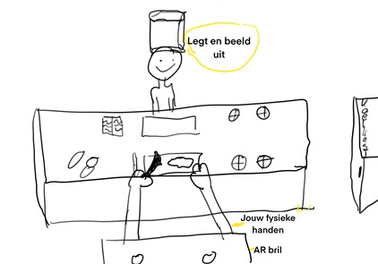
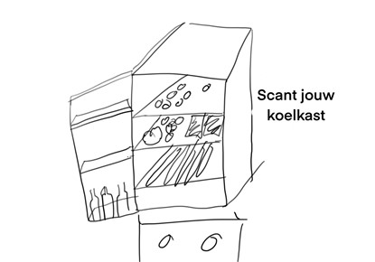
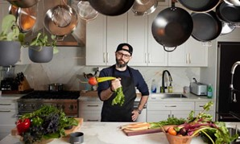

Portfolio HCI Marissa Hoekmeijer
AR&VR assignment
Deze week gingen wij als studenten aan de slag met de topic AR en VR, dat staat voor Artificial reality environment en Virtual reality environment. VR zorgt ervoor dat een gebruiker, doormiddel van gecreëerde software in een omgeving terecht komt dat niet echt is. Maar de omgeving is op zo’n manier gecreëerd, dat de gebruiker gelooft en accepteert dat deze omgeving wel echt is. AR houdt in dat de gebruiker een indirecte of directe live-zicht krijgt op de fysieke echte wereld. Waarbij de elementen in dit zicht gecreëerd zijn bij de computer zijn perceptuele informatie.
Nieuwe AR&VR concept
Voor onze eerste opdracht wordt ons gevraagd om één concept te bedenken binnen de AR/VR wereld, dat behoort tot één van de volgende onderwerpen:
- Gezondheid
- Auto’s, auto technologie, wegwerkzaamheden en/of infrastructuur
- Openbaar vervoer
- Sport / gezonde levensstijl
- Klimaat en/of klimaatsverandering
Ik zelf heb een concept bedacht met betrekking op een gezonde levensstijl. Hieronder zal ik een korte uitleg weergeven,
met wat het doel er mee is en hoe het zou moeten werken.
Uitleg concept
Met de AR recepten voorbereiden, moet je doormiddel van het opzetten van een bril een projectie te zien krijgen op jou fysieke wereld. In deze wereld kan je kiezen welk recept jij voor de avond wilt gaan koken. De bril kan op basis van de informatie uit de beelden van de inhoud van je koelkast, inzien welke recepten je kan koken. Hij geeft een aantal recept opties en de keus is aan de gebruiker. Na de keus gemaakt te hebben kan je als gebruiker het recept volgen. Een personal kok komt voor je staan en legt alles precies haar fijn uit, wat je moet doen. Zo zet je iedere avond een heerlijk recept op tafel! Het doel is geen voedselverspilling en snel en simpel heerlijke recepten op tafel te krijgen.
  